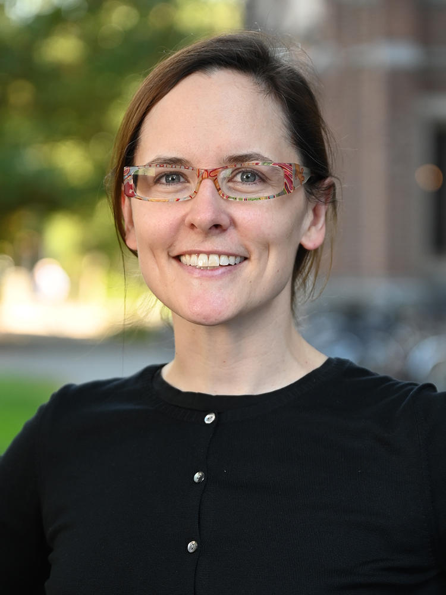
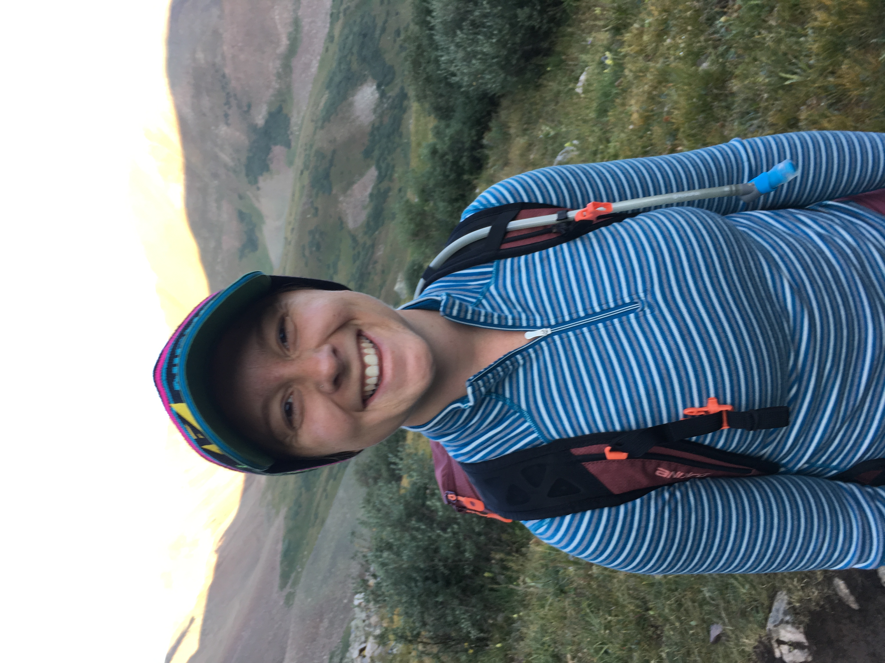
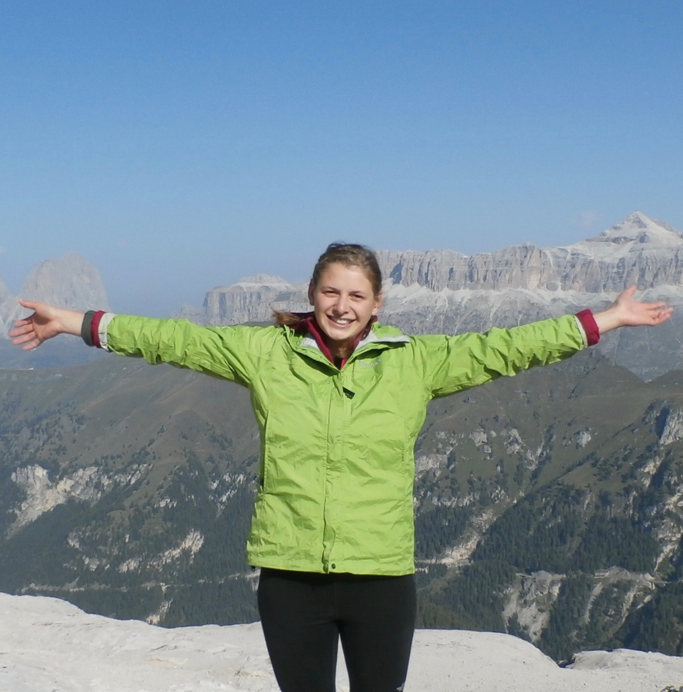
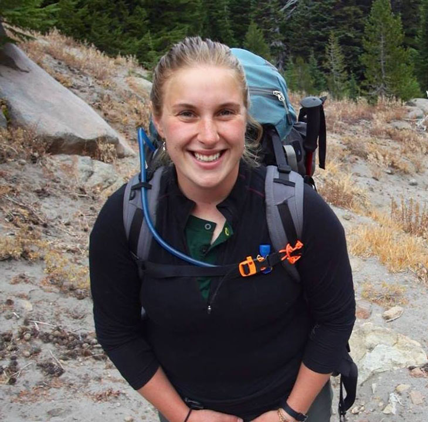
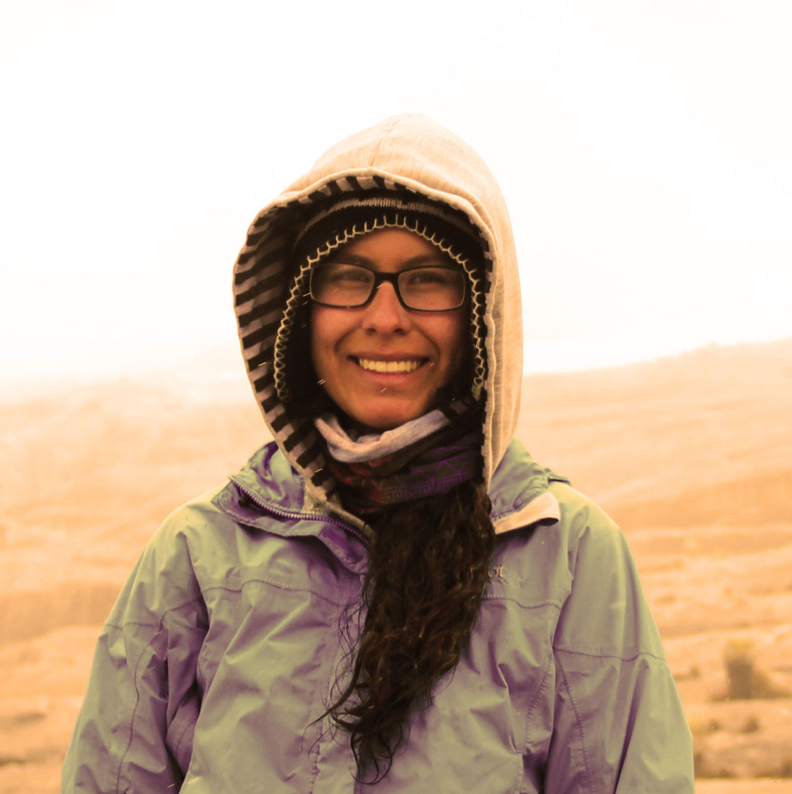
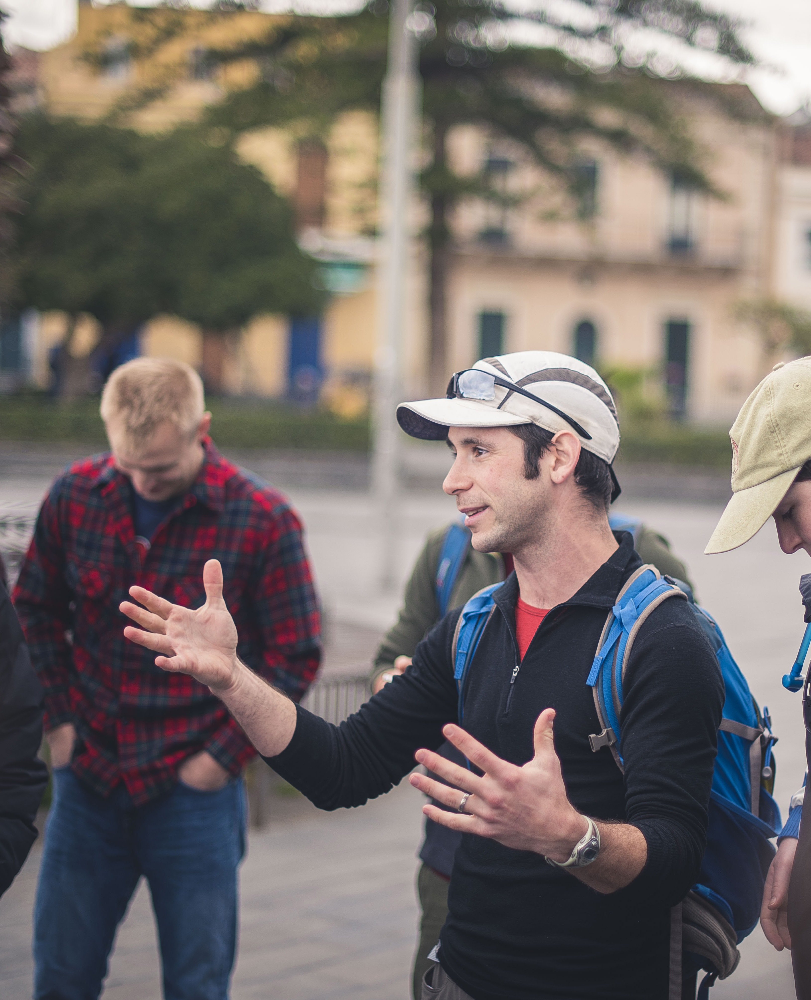
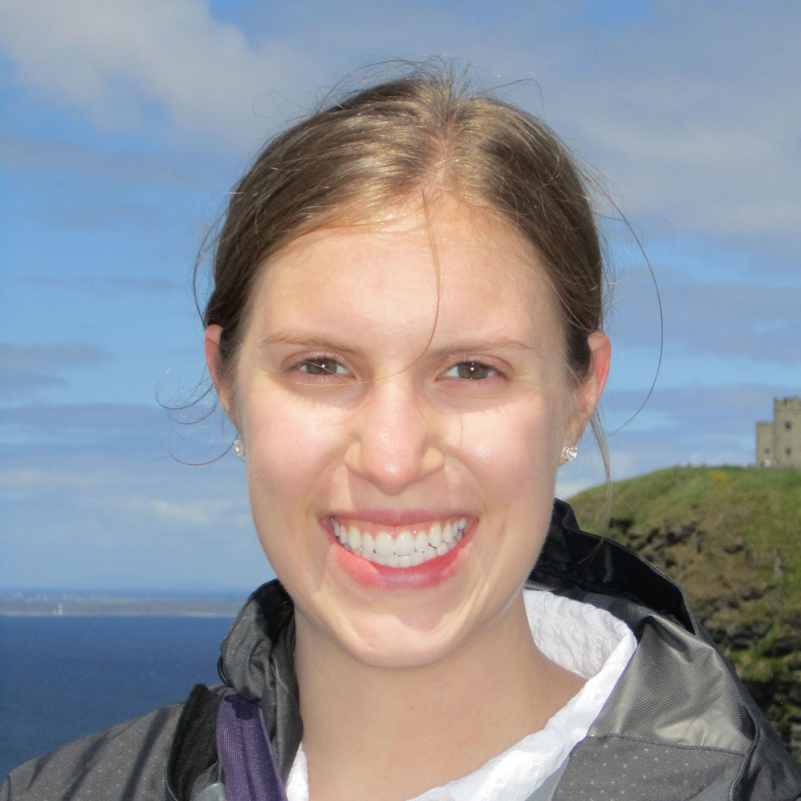
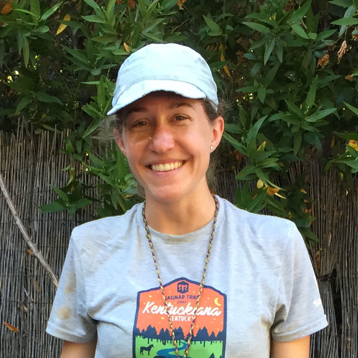
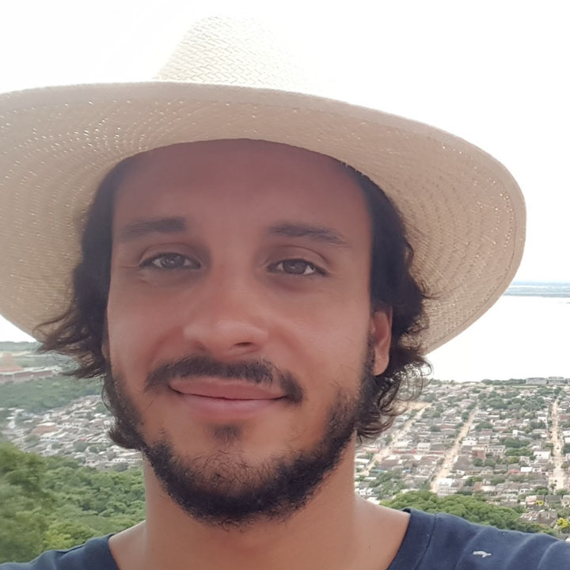
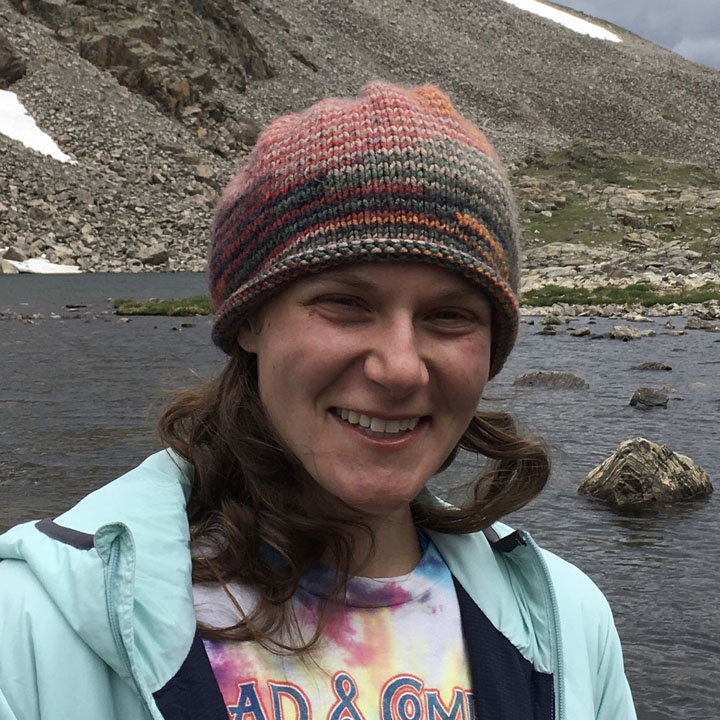

Terrestrial Paleoclimate and Tectonics members
 Katie Snell
[email]
Katie Snell
[email]
Assistant Professor
Postdoc, Caltech 2011-2014
PhD, UC Santa Cruz 2011
BA, Colorado College 2002
Katie is interested in terrestrial paleoenvironmental reconstruction, paleoaltimetry, diagenesis and modern depositional processes. She uses a range of sedimentology and stable isotope geochemistry tools to address these questions.

Ashley Maloney
[email]
Research Associate and CUBES-SIL Lab Manager, 2022-Present
Simons Postdoctoral Fellow, Princeton University 2018-2022
MS & PhD, University of Washington 2018
BS & MS, Stanford University 2005
Ashley will be joining us as the new CUBES-SIL lab manager in Fall 2022; more updates soon!

Rachel Havranek
[email]
PhD candidate
BA, Pomona College
Rachel is interested in how the hydrologic cycle is recorded by the stable isotopes of pedogenic carbonate. Currently, she is testing a system that can automatically sample and store soil water vapor to better understand pedogenic carbonate formation in the modern environment.

Juliana Olsen-Valdez
[email]
PhD candidate
BA, Lawrence University
Juliana has a deep appreciation for the earth, nature, and being outdoors. Her research interests include paleoclimate and paleoenvironmental change, specifically during the Paleocene-Eocene Thermal Maximum. This coming year, Juliana will begin paleoclimate studies on the Sheep Pass Formation in east-central Nevada.
Haley Brumberger
[email]
PhD sutdent
BA/MS, Wesleyan
Haley will be joining the lab in Fall 2022; stay tuned for updates!
Lab Alumni

Anne Fetrow
[email]
PhD, CU Boulder 2022
BA, University of Puget Sound
Anne is a visiting Assistant Professor at Bates College for the 2022/2023 academic year, then will begin an NSF Postdoctoral Fellowship at the University of Michigan in Summer, 2023.

Lina Perez-Angel
[email]
PhD, CU Boulder 2022
BS, Universidad de Los Andes
Lina is currently a Voss Postdoctoral Fellow at Brown University.
 Brett Davidheiser-Kroll
[email]
Brett Davidheiser-Kroll
[email]
Research Associate and CUBES-SIL Lab Manager 2015-2021
PhD, University of Glasgow 2014
MS, Vrije Universiteit Amsterdam 2011
BS, UC Berkeley 2006
Brett is now working for Thermo Scientific in the IRMS division.

David Colwyn
[email]
NSF Postdoctoral Fellow, CU Boulder 2018-2020
PhD, Yale University
BA, Carleton College
 Vikki Crystal
[email]
Vikki Crystal
[email]
MS, CU Boulder 2019
BA, Colorado College
Vikki is back in Colorado, working as a museum specialist for the USGS in Lakewood.

Anna Todd
[email]
BA, summa cum laude, CU Boulder, 2019
Anna is currently a law student at Harvard University.

Miquela Ingalls
[email]
[website]
Postdoc, CU Boulder, 2017-2018
PhD, University of Chicago, 2017
BS, University of North Carolina
Miquela went on to a Barr Postdoctoral Fellowship at Caltech, and is currently an Assistant Professor at Penn State.

Alejandro Murillo
[email]
BA, cum laude, CU Boulder, 2017
Alejandro is back in Boulder, working as the Boulder County Liaison for the climate justice non-profit, Boulder.Earth.

Cara Lauria
[email]
MS, CU Boulder 2017
BS, College of Charleston
Cara is currently a biological technician for the USGS in Moab, UT.